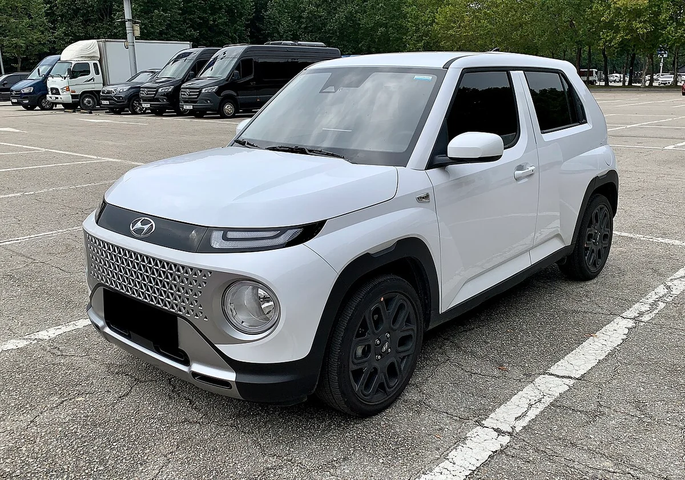
▲ 현대 캐스퍼(가솔린). 연식·트림은 확정하지 않으며 번호판은 가려져 있다 ⓒ Benespit / Wikimedia Commons (CC BY-SA 4.0)
"경차가 유지비 제일 적게 든다는데, 정말 그런가?" 차를 고를 때 가장 많이 듣는 말이지만, 실제로 계산해 본 표는 거의 보기 어렵다. 보험료와 정비비는 개인차가 커서 공식 수치가 없기 때문이다.
이 글은 그 중에서 공식 수치로 계산할 수 있는 세 가지, 곧 연료·전기료, 자동차세, 정기검사 수수료만 모아 신차 8종을 같은 조건에 놓았다(2026년 10월 23일 기준, 연 1.5만km). 보험·소모품·감가·할부·주차·세차는 계산하지 않았고, 왜 뺐는지도 8장에 적었다.
1. 연 유지비 순위 — 8종 한눈에, 1위와 8위는 136.7만 원 차이
연 1.5만km를 탈 때 연료·전기료, 자동차세, 정기검사를 합친 연 비용은 캐스퍼 일렉트릭 89.8만 원이 가장 적고 레이 226.5만 원이 가장 많다. 월로 나누면 7.5만 원과 18.9만 원이다.
| 순위 | 차종·기준 트림 | 신차 판매가 | 공인 복합 | 연 사용량 | 연료·전기료 | 자동차세 | 검사(연 환산) | 연 합계 | 월 환산 |
|---|---|---|---|---|---|---|---|---|---|
| 1 | 캐스퍼 일렉트릭 프리미엄 | 2,847 | 5.8km/kWh | 2,586kWh | 76.3 | 13.0 | 0.5 | 89.8 | 7.5 |
| 2 | EV3 에어 스탠다드 | 3,995 | 5.2km/kWh | 2,885kWh | 85.1 | 13.0 | 0.5 | 98.6 | 8.2 |
| 3 | 아이오닉 5 스탠다드 E-Value+ | 4,735 | 5.1km/kWh | 2,941kWh | 86.8 | 13.0 | 0.5 | 100.2 | 8.4 |
| 4 | 니로 하이브리드 트렌디 | 2,927 | 20.2km/L | 743L | 137.7 | 28.8 | 0.5 | 167.0 | 13.9 |
| 5 | 모닝 트렌디(승용) | 1,421 | 14.7km/L | 1,020L | 189.3 | 10.4 | 0.5 | 200.1 | 16.7 |
| 6 | 캐스퍼 스마트(가솔린) | 1,546 | 14.3km/L | 1,049L | 194.6 | 10.4 | 0.5 | 205.4 | 17.1 |
| 7 | 쏘렌토 하이브리드 프레스티지 | 3,963 | 15.7km/L | 955L | 177.2 | 29.1 | 0.5 | 206.8 | 17.2 |
| 8 | 레이 트렌디(승용) | 1,555 | 12.9km/L | 1,163L | 215.7 | 10.4 | 0.5 | 226.5 | 18.9 |
전기차가 위쪽을 차지하는 이유는 같은 거리를 달릴 때 kWh당 295.0원의 전기가 리터당 1,855원의 휘발유보다 훨씬 싸고, 전기차 자동차세가 정액 13만 원이라 하이브리드(28.8만~29.1만 원)보다도 적기 때문이다. 항목 반올림 때문에 합계가 0.1만 원 차이 날 수 있다.
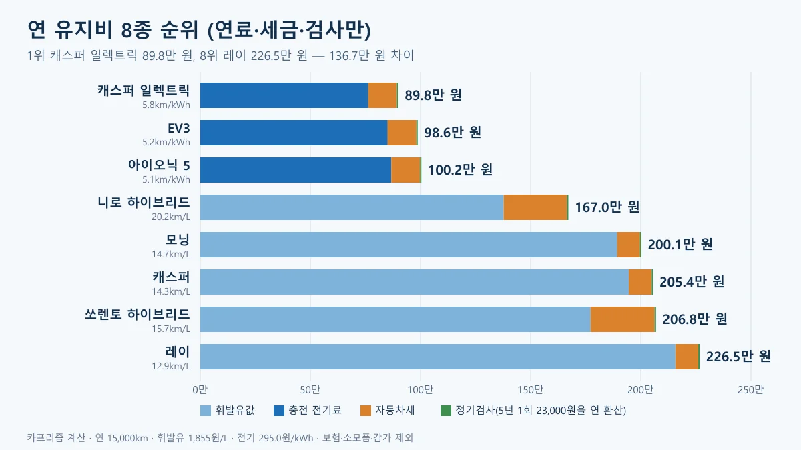
▲ 8종 연 유지비 도표. 파랑 계열은 연료·전기료, 주황은 자동차세, 초록은 검사다. 카프리즘 제작(가정 계산)
이 순위는 보험료와 소모품을 뺀 것이어서 "내 차 총유지비 순위"가 아니다. 월 단위의 전체 고정비는 차 없이 한 달 vs 내 차 월비용 기사에서, 지난 1년 지출을 직접 결산하는 방법은 연간 유지비 결산 기사에서 다뤘다. 이 글은 "어떤 차를 사면 연료·세금 쪽이 가장 싼가"만 답한다.
2. 이 계산의 기준 — 어떤 값을 어디서 가져왔나
계산에 쓴 값은 제조사 공식 가격·복합연비, 오피넷 가격, 지방세법 세율, 교통안전공단 수수료 네 가지다. 모두 아래 표에 출처와 기준일을 달았다.
| 항목 | 값 | 근거 |
|---|---|---|
| 연 주행거리 | 15,000km | 카프리즘 가정(7장에서 5,000~30,000km로 바꿔 계산) |
| 휘발유 | 1,855원/L | 오피넷 지역별 평균 판매가격(2026년 10월 22일) 16개 시도의 단순평균 1,855.08원. 최저 대구 1,827.33원, 최고 서울 1,902.14원이며 공식 전국평균이 아니다 |
| 전기 | 295.0원/kWh | 공공 충전요금 30kW 미만 완속 단가(2026년 8월 1일 시행). 기후에너지환경부 개편(5단계 체계)을 다룬 정책브리핑이 완속 29.4원(9.1%) 인하·초급속 45.9원(13.2%) 인상을 밝혔고, 서울시 환경 누리집 요금표가 단가 5개를 싣고 있다. 이 요금은 기후부가 운영하는 공공충전기와 협약 민간충전기의 회원카드 결제(로밍)에 적용되며, 민간 사업자 요금은 따로 다르다. 충전 손실은 더하지 않고 공인 전비를 그대로 썼다 |
| 복합연비·전비 | 차종별(1장 표) | 기아 공식 제원 페이지(모닝 14.7·레이 12.9·니로 20.2km/L, 쏘렌토 15.7km/L, EV3 5.2km/kWh를 직접 확인), 현대차 2027년형 아이오닉 5 제원표, 캐스퍼 온라인 제원(카프리즘 기존 기사 인용, 이번에 직접 확인하지 못함). 표준모드 값이라 실주행과 차이가 난다 |
| 자동차세 | 3장 표 | 지방세법 제127조 제1항 세율(승용자동차 cc당 세액, 전기차 등 그 밖의 승용자동차 정액)에 지방교육세 30%(제151조 제1항 제7호)를 더한 값 |
| 정기검사 | 23,000원 | 한국교통안전공단 수수료 안내(부가세 포함). 신조차 최초 유효기간 5년(자동차관리법 시행규칙 별표 15의2)이라 5년에 1회로 계산 |
| 신차 판매가 | 1장 표 | 기아 가격표(2026년 10월 1일 기준 표기, 가격 페이지에서 직접 확인), 아이오닉 5는 현대닷컴 가격 페이지의 시작가(47,350,000원, 2026년 10월 1일 기준 표기), 캐스퍼·캐스퍼 일렉트릭은 2027년형 출시 보도(2026년 7월, 스마트 1,546만 원·일렉트릭 프리미엄 2,847만 원). 모두 개별소비세 감면 등 세제혜택 후 금액이고 전기차 구매보조금은 뺀 값이 아니다 |
가정이 많아 보이지만 결과를 흔드는 것은 사실상 두 가지, 곧 휘발유 가격과 충전 단가다. 휘발유가 1,700원이면 모닝 184.3만·캐스퍼 189.2만·쏘렌토 192.0만·니로 155.5만 원이고, 2,000원이면 각각 214.9만·220.6만·220.6만·177.7만 원이 된다(전기차는 영향 없음). 전기차와 하이브리드의 순서는 어느 쪽에서도 바뀌지 않는다.
휘발유는 오피넷 지역별 평균가격 바로가기에서, 충전 단가 구조는 8월 충전 요금 개편 기사에서, 정부 발표는 정책브리핑 충전요금 개편 바로가기에서 확인할 수 있다.
3. 자동차세는 얼마인가 — 경차 10.4만 원, 1,600cc 미만 하이브리드 29만 원, 전기차 13만 원
연 자동차세는 경차 103,792원, 니로 하이브리드 287,560원, 쏘렌토 하이브리드 290,836원, 전기차 130,000원이다. 지방세법 제127조 제1항 제1호의 비영업용 승용 세율(cc당 1,000cc 이하 80원, 1,600cc 이하 140원, 1,600cc 초과 200원)과 제3호의 그 밖의 승용자동차(전기차 등) 정액 10만 원에 지방교육세 30%를 더해 계산했다.
| 차종 | 배기량 | 계산식 | 연 세액 |
|---|---|---|---|
| 모닝·레이·캐스퍼(가솔린) | 998cc | 998 × 80원 = 79,840원 × 1.3 | 103,792원 |
| 니로 하이브리드 | 1,580cc | 1,580 × 140원 = 221,200원 × 1.3 | 287,560원 |
| 쏘렌토 하이브리드 | 1,598cc | 1,598 × 140원 = 223,720원 × 1.3 | 290,836원 |
| 캐스퍼 일렉트릭·EV3·아이오닉 5 | 해당 없음 | 비영업용 전기차 연 100,000원 정액 × 1.3 | 130,000원 |
하이브리드가 1,600cc 안쪽인데도 경차의 2.8배를 내는 이유는, 998cc까지만 cc당 80원이고 그 위 구간은 140원이라 배기량이 580cc 늘어난 것보다 세율이 더 크게 뛰기 때문이다. 이 차이 18만 원은 하이브리드가 연료비로 아끼는 돈을 상당 부분 되돌려 준다(5장).
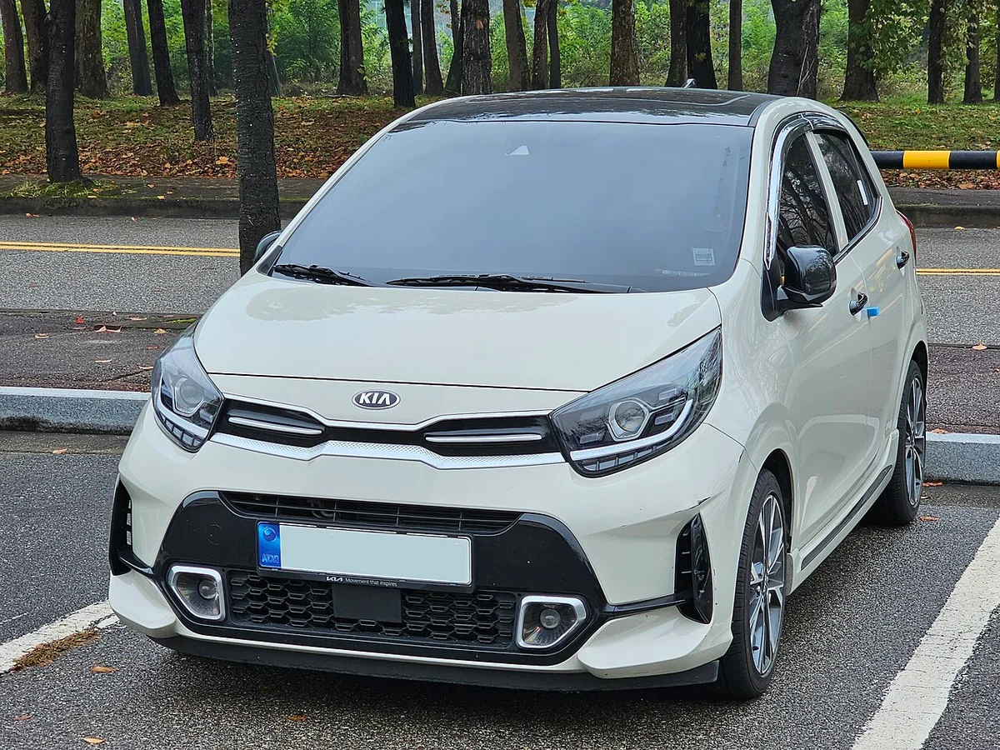
▲ 기아 모닝(JA 부분변경). 998cc 경형이라 이 글의 자동차세 최저 구간(연 103,792원)에 해당한다. 연식·트림은 확정하지 않는다 ⓒ Damian B Oh / Wikimedia Commons (CC BY-SA 4.0)
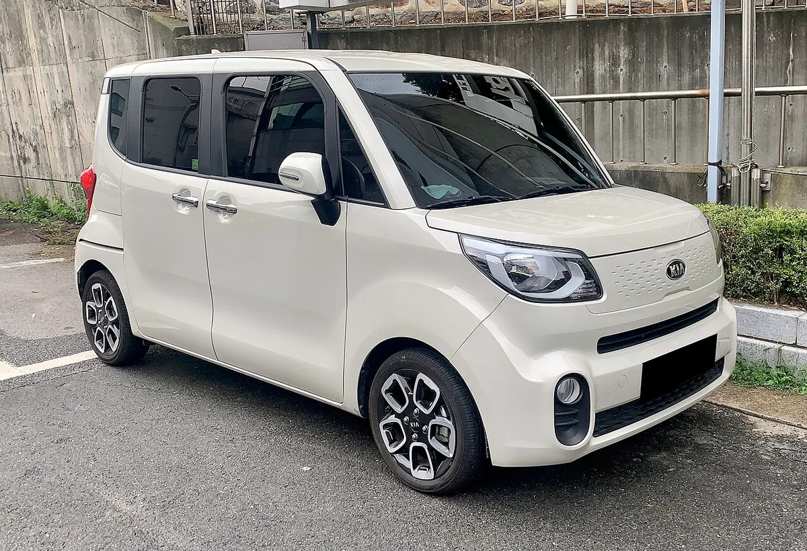
▲ 기아 레이. 사진 속 차는 이전 세대 외관으로 보이며 현행 모델과 다를 수 있다(연식 확정하지 않음). 이 글의 연비 12.9km/L는 현행 제원 페이지 값이다 ⓒ Benespit / Wikimedia Commons (CC BY-SA 4.0)
차령이 3년 이상이면 세액이 매년 줄어드는 경감 제도가 있지만(배기량·차령별 계산 기사) 5년 합계는 경감을 반영하지 않은 값이어서 내연기관 쪽이 조금 더 불리하게 잡힌다. 전기차는 정액이라 경감이 없다. 세율 원문은 국가법령정보센터 지방세법 바로가기에서 볼 수 있고, 지자체 조례로 달라질 수 있다.
4. 정기검사 수수료는 5년에 23,000원 — 순위를 바꾸지 못하는 항목
정기검사 수수료는 승용차 23,000원(부가세 포함)이고, 신조차는 최초 유효기간이 5년이라 5년에 한 번 받는다. 연으로 나누면 4,600원이라 어떤 차종이든 순위를 바꾸지 못한다.
| 구분 | 경형 | 소형 | 중형 | 대형 |
|---|---|---|---|---|
| 수수료 | 17,000원 | 23,000원 | 26,500원 | 29,000원 |
| 유효기간(비사업용 승용) | 신조차 최초 5년, 이후 2년 | |||
공단 안내는 "승용자동차(10인이하 승합차 포함)는 소형수수료가 적용됩니다"라고 적고 있어, 경형 승용인 모닝·레이·캐스퍼도 23,000원으로 계산했다. 최초 유효기간 5년은 자동차관리법 시행규칙 별표 15의2(신조차로서 법 제43조제5항에 따라 신규검사를 받은 것으로 보는 자동차)에 따른다. 전기차 수수료가 따로 있는지는 해당 페이지에 안내가 없어 확인하지 못했다. 5년 뒤에는 2년마다 한 번씩 받으므로 장기 보유할수록 연 환산액은 조금씩 늘어난다. 한국교통안전공단 수수료 안내 바로가기
종합검사 대상 지역에서는 수수료가 이보다 높을 수 있어, 만료일과 대상 여부는 교통안전공단에서 확인해야 한다.
5. 연료·전기료가 순위를 가른다 — 하이브리드 절감분을 세금이 되돌려 준다
순위를 가르는 항목은 연료·전기료다. 같은 15,000km를 달릴 때 레이는 휘발유 1,163L(215.7만 원), 니로 하이브리드는 743L(137.7만 원), 캐스퍼 일렉트릭은 전기 2,586kWh(76.3만 원)를 쓴다.
니로 하이브리드는 모닝보다 연료비를 51.6만 원 아끼지만(189.3만→137.7만 원), 자동차세가 18.4만 원 더 나와 순절감은 33.1만 원이 된다. 쏘렌토 하이브리드는 캐스퍼 가솔린보다 연료비를 17.4만 원 아끼는데 자동차세가 18.7만 원 많아, 결과적으로 연 1.4만 원 더 든다.
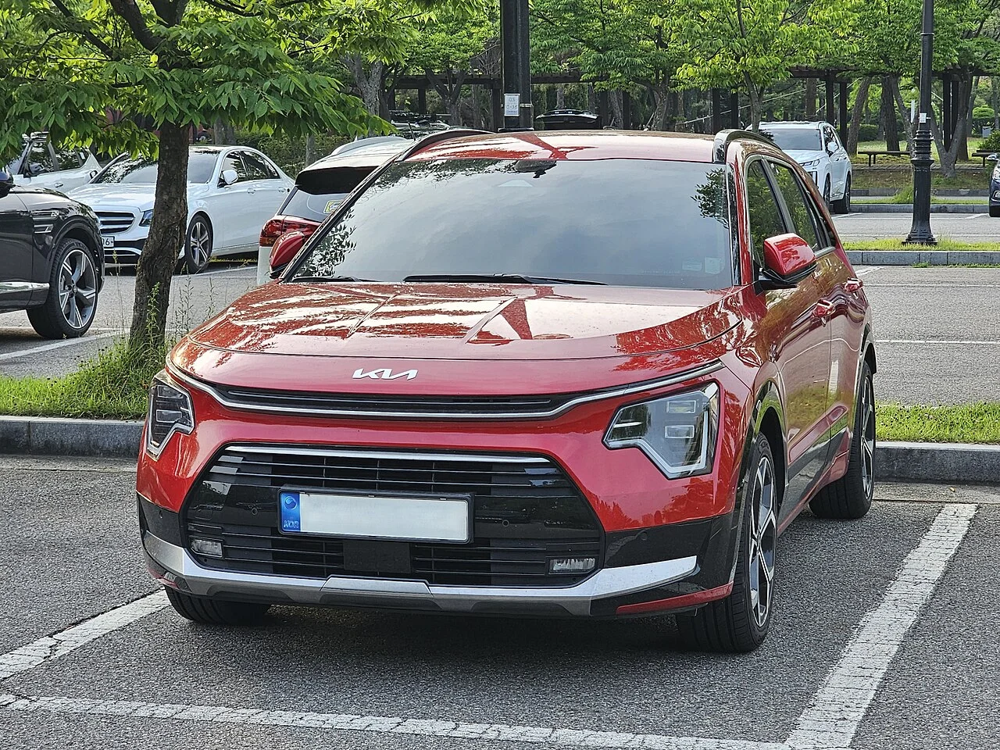
▲ 기아 니로 하이브리드(부분변경 이전 모델). 이 글의 20.2km/L는 16인치 타이어 기준 현행 공식 제원이다 ⓒ Damian B Oh, Wikimedia Commons (CC BY-SA 4.0)
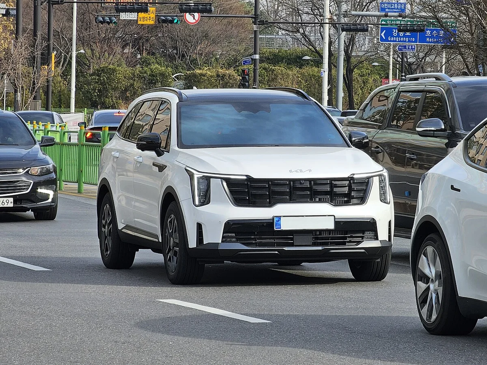
▲ 기아 쏘렌토(MQ4 부분변경) 전면. 사진으로는 파워트레인을 확인할 수 없고 현행 2027년형과 외관이 다를 수 있다 ⓒ Damian B Oh, Wikimedia Commons (CC BY-SA 4.0)
전기차 세 종은 연 사용량이 비슷하다
전기차는 5.1~5.8km/kWh 범위여서 연 전력량이 2,586~2,941kWh로 크게 벌어지지 않는다. 그래서 순위는 사실상 전비에서 갈린다. 캐스퍼 일렉트릭(5.8)이 EV3(5.2)보다 연 8.8만 원, 아이오닉 5(5.1)보다 10.4만 원 적게 든다. 단, 공인 전비는 표준모드 값이라 겨울철 저온에서는 실제 전비가 떨어질 수 있다.
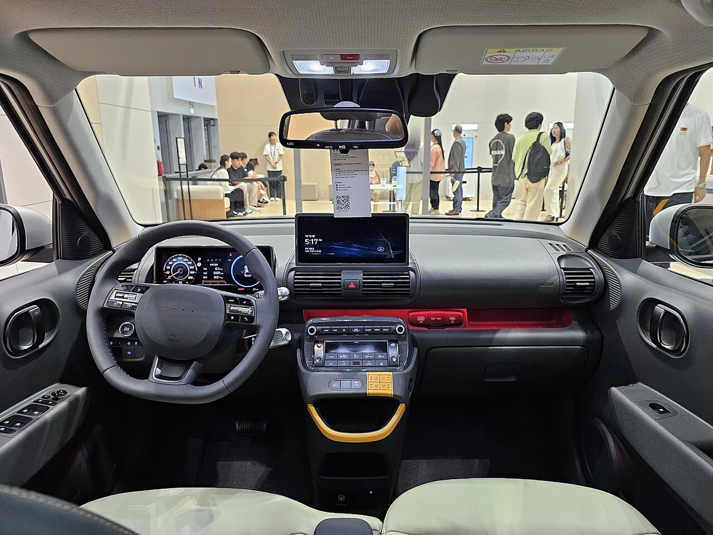
▲ 캐스퍼 일렉트릭 실내(2024 부산국제모빌리티쇼 전시차). 2026년형과 사양이 다를 수 있고, 이 글의 전비 5.8km/kWh는 프리미엄 15인치 기준이다 ⓒ Damian B Oh / Wikimedia Commons (CC BY-SA 4.0)
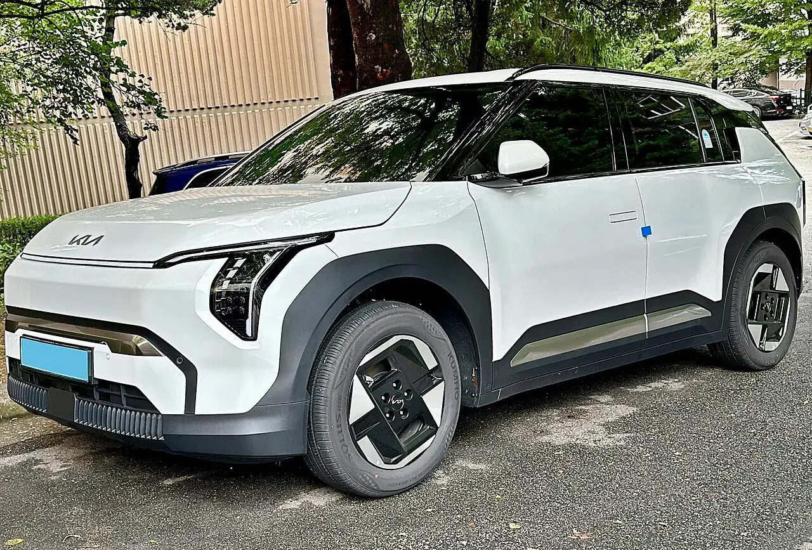
▲ 기아 EV3. 이 글의 전비 5.2km/kWh는 에어 스탠다드 17인치 공식 제원이다 ⓒ Benespit, Wikimedia Commons (CC BY-SA 4.0)
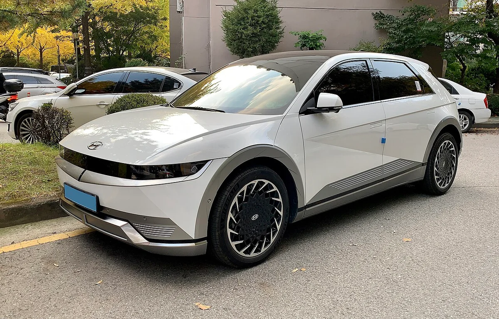
▲ 현대 아이오닉 5(2021년 촬영). 현행 2027년형과 외관이 다를 수 있으며, 이 글의 5.1km/kWh는 스탠다드 2WD 19인치 제원표 값이다 ⓒ Benespit / Wikimedia Commons (CC BY-SA 4.0)
6. 신차가 대비 5년 유지비 비율 — 경차는 차값의 약 70%, 전기차는 10~16%
5년 유지비를 신차 판매가로 나누면 아이오닉 5가 10.6%로 가장 낮고, 레이가 72.8%로 가장 높다. 차값이 싼 경차일수록 연료·세금이 차값에서 차지하는 몫이 크다는 뜻이다.
| 차종 | 신차 판매가 | 5년 유지비 | 비율 | 5년 유지비 순위 |
|---|---|---|---|---|
| 아이오닉 5 스탠다드 | 4,735 | 501 | 10.6% | 3위 |
| EV3 에어 스탠다드 | 3,995 | 493 | 12.3% | 2위 |
| 캐스퍼 일렉트릭 프리미엄 | 2,847 | 449 | 15.8% | 1위 |
| 쏘렌토 하이브리드 | 3,963 | 1,034 | 26.1% | 7위 |
| 니로 하이브리드 | 2,927 | 835 | 28.5% | 4위 |
| 캐스퍼 가솔린 | 1,546 | 1,027 | 66.4% | 6위 |
| 모닝 | 1,421 | 1,001 | 70.4% | 5위 |
| 레이 | 1,555 | 1,133 | 72.8% | 8위 |
비율이 이렇게 갈리는 것은 분자(5년 유지비)가 1,000만 원 안팎으로 비슷한 세 차종(모닝·캐스퍼·쏘렌토)도 분모(차값)가 1,421만~3,963만 원으로 벌어져 있기 때문이다. 전기차의 낮은 비율은 보조금을 빼지 않은 판매가로 나눈 값이라 실구매가 기준이면 비율이 더 올라간다.
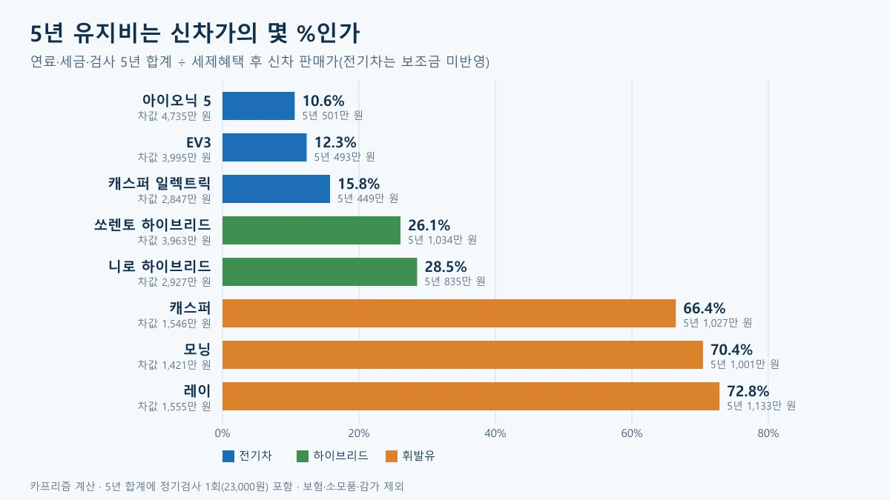
▲ 5년 유지비 ÷ 신차 판매가 도표. 카프리즘 제작(가정 계산, 전기차 보조금 미반영)
카프리즘 시선
쏘렌토 하이브리드(5년 1,034만 원)와 캐스퍼 가솔린(1,027만 원)의 5년 유지비는 7만 원밖에 차이 나지 않는데, 신차 판매가는 2,417만 원 벌어져 있다. 하이브리드의 연비 우위(15.7 대 14.3km/L)가 연 17.4만 원의 연료비를 줄여 주지만, cc당 세율이 80원에서 140원으로 오르는 자동차세가 연 18.7만 원을 되가져가기 때문이다.
반대로 전기차는 연료·세금 양쪽에서 이익이어서 5년 합계가 휘발유 경차의 절반 이하(449만~501만 원 대 1,001만~1,133만 원)다. 다만 같은 계산으로 캐스퍼 일렉트릭과 가솔린의 판매가 차이 1,301만 원을 연 유지비 차이 115.6만 원으로 나누면 약 11.3년이 걸린다(보조금·보험·감가 제외). 보조금과 보험까지 넣은 3년 비교는 캐스퍼 일렉트릭 vs 가솔린 3년 총비용 기사에 있다.
7. 연 주행거리가 바뀌면 순위가 뒤집힌다 — 5,350km와 16,170km
1.5만km는 평균적인 가정일 뿐이고, 모닝은 연 약 5,350km보다 적게 타면 니로 하이브리드보다 싸고, 쏘렌토는 연 약 16,170km보다 많이 타면 캐스퍼보다 싸다. 고정비(자동차세)는 거리와 무관하고 연료비만 거리에 비례하기 때문이다.
| 연 주행거리 | 모닝 | 캐스퍼 가솔린 | 니로 하이브리드 | 쏘렌토 하이브리드 | 캐스퍼 일렉트릭 |
|---|---|---|---|---|---|
| 5,000km | 73.9 | 75.7 | 75.1 | 88.6 | 38.9 |
| 10,000km | 137.0 | 140.6 | 121.0 | 147.7 | 64.3 |
| 15,000km | 200.1 | 205.4 | 167.0 | 206.8 | 89.8 |
| 20,000km | 263.2 | 270.3 | 212.9 | 265.8 | 115.2 |
| 30,000km | 389.4 | 400.0 | 304.7 | 384.0 | 166.0 |
같은 이유로 출퇴근이 짧고 주말에만 타는 사람은 하이브리드의 연료비 이점이 세금 차이에 먹혀 경차와 격차가 거의 없고, 장거리 운전이 많은 사람일수록 하이브리드와 전기차의 이점이 커진다. 경차 혜택(유류세 환급, 통행료·주차 할인)까지 포함한 5년 합계는 경차 5년 혜택 기사에서 따로 계산했다.
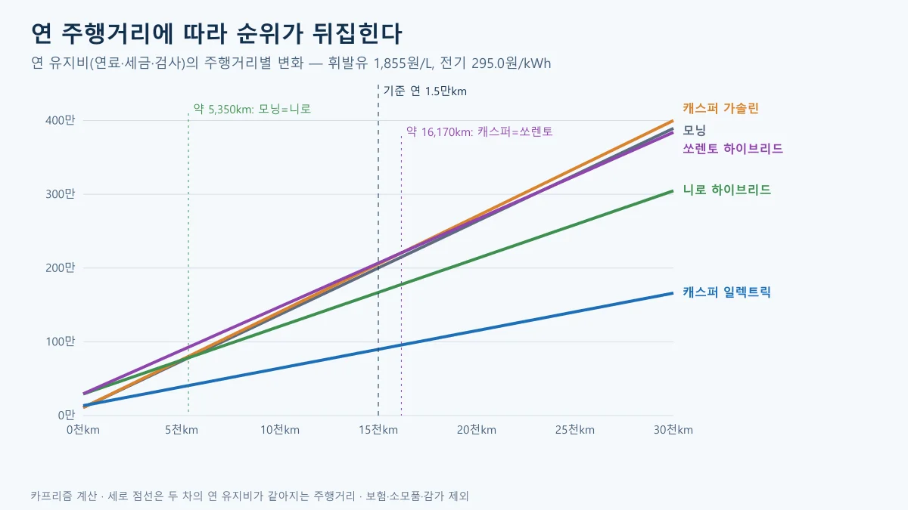
▲ 주행거리별 연 유지비 도표. 세로 점선은 두 차의 연 비용이 같아지는 거리다. 카프리즘 제작(가정 계산)
전부 초급속으로 충전해도 전기차가 싼가
충전을 전부 공공 급속으로 해도 전기차 세 종은 하이브리드보다 적게 든다. 단가가 가장 높은 200kW 이상 초급속(393.1원/kWh)만 쓴다고 가정하면 캐스퍼 일렉트릭 115.1만, EV3 126.9만, 아이오닉 5 129.1만 원으로, 니로 하이브리드(167.0만 원)보다 38만~52만 원 적다.
| 충전 단가 | 캐스퍼 일렉트릭 | EV3 | 아이오닉 5 |
|---|---|---|---|
| 공공 완속 295.0원/kWh | 89.8 | 98.6 | 100.2 |
| 50~100kW 급속 325.6원/kWh | 97.7 | 107.4 | 109.2 |
| 200kW 이상 초급속 393.1원/kWh | 115.1 | 126.9 | 129.1 |
단가 차이가 연 25만~29만 원으로 하이브리드와의 격차보다 작기 때문에, 충전 방식은 순위가 아니라 편의의 문제로 남는다. 집 충전은 한전 요금제와 가구 사용량에 따라 단가가 달라 이번 계산에서 뺐다.
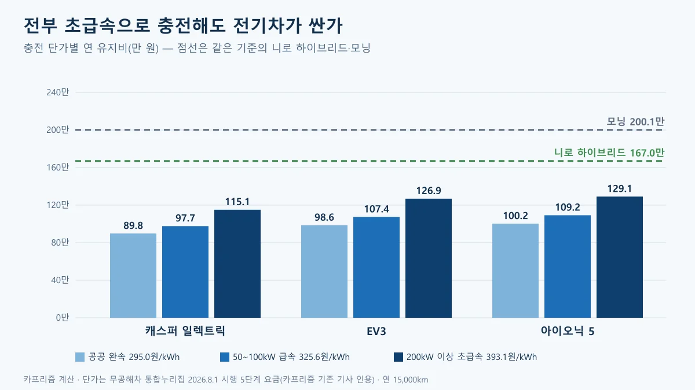
▲ 충전 단가별 전기차 연 유지비 도표. 카프리즘 제작(가정 계산, 단가는 2026.8.1 시행 공공충전 5단계 요금으로 서울시 환경 누리집 요금표와 정책브리핑에서 확인)
8. 아쉬운 점·주의할 점 — 이 순위에 없는 것들
이 순위는 연료·세금·검사만의 순위이고, 아래 항목은 의도적으로 뺐다. 빼는 순간 순위가 바뀔 수 있는 항목이 많다.
⚠️ 계산에서 뺀 항목과 이유
- 보험료: 차종별로 공개된 공식 수치가 없고 나이·경력·특약에 따라 크게 달라 제외했다. 같은 조건의 견적은 보험다모아에서 직접 받아야 한다. 보험다모아 바로가기
- 엔진오일 등 소모품: 현대차·기아가 차종별 소모품 가격을 공식 가격표로 공개한 것을 확인하지 못해 제외했다. 검색으로 확인한 범위에서 현대차 블루핸즈 공식 안내에는 표준정비시간만 있고 가격은 없었다
- 감가·할부 이자·취득세: 차값과 개인 신용, 매각 시점에 따라 다르다. 첫해 지출은 카프리즘 첫차 첫 1년 숨은 비용 기사에서 따로 계산했다
- 민간 충전사업자 요금·집 충전: 이 글의 295.0~393.1원은 기후에너지환경부 공공충전 요금표다. 민간 사업자 충전기는 회원카드 로밍 여부와 사업자에 따라 단가가 다르고, 집 충전은 한전 요금제에 따라 달라 계산하지 않았다
- 주차·세차·통행료·충전기 설치: 개인차가 커서 제외했다. 경차의 통행료·공영주차 50% 할인은 순위에 포함하지 않았다
- 전기차 구매보조금: 지자체마다 다르고 신차가에 반영하지 않았다. 전기차 비율(6장)은 보조금을 받으면 올라간다
- 경차 유류세 환급: 경차 유류세 환급은 연 한도 30만 원 안에서 이뤄지지만 제도 시한과 한도를 이번에 다시 확인하지 못해 계산하지 않았다(경차 혜택 기사). 반영하면 모닝·캐스퍼·레이의 연 비용이 줄어든다
또 하나, 차급이 다른 차를 한 표에 놓은 만큼 "가장 싼 차"가 곧 "내게 맞는 차"는 아니다. 쏘렌토는 7인승·SUV, 레이는 짐칸과 슬라이딩 도어가 목적이어서 유지비만으로 고르면 쓰임새가 어긋난다.
9. 이 글이 확인하지 못한 것
- 충전 단가: 295.0원(30kW 미만)·325.6원(50~100kW)·393.1원(200kW 이상)은 서울시 환경 누리집의 5단계 요금표와 일치하고, 완속 인하·초급속 인상 폭은 정책브리핑(기후에너지환경부)이 밝힌 29.4원·45.9원과 맞는다. 무공해차 통합누리집 원문 표는 직접 열지 못했고, 민간 충전사업자 요금과 집 충전 단가는 계산에 넣지 않았다.
- 캐스퍼·캐스퍼 일렉트릭 연비와 가격: 캐스퍼 온라인 페이지가 동적이라 직접 읽지 못했다. 가격 1,546만 원(스마트)·2,847만 원(일렉트릭 프리미엄)은 2027년형 출시 보도 여러 건에서 같은 값을 확인했지만, 14.3km/L·5.8km/kWh는 카프리즘 기존 기사(캐스퍼 일렉트릭 vs 가솔린 3년 총비용)가 정리한 값이다. 기존 기사에서 14.3km/L는 15인치 타이어 기준(17인치는 13.8km/L)이므로 스마트 트림의 기본 타이어 연비가 다르면 가솔린 캐스퍼의 연 비용은 이 글보다 다소 늘 수 있다. 아이오닉 5의 4,735만 원은 현대닷컴 가격 페이지(2026년 10월 1일 기준 표기)에서, 5.1km/kWh는 현대차 2027년형 제원표(PDF)에서 확인했다.
- 쏘렌토 연비 사양: 공식 제원 페이지의 최고값 15.7km/L(2WD 5인승 17·18인치)를 썼고, 프레스티지 기본 휠이 어느 쪽인지는 확인하지 못했다. 니로는 빌트인 캠 적용 시 19.4km/L로 떨어진다는 표기가 있다.
- 테슬라 모델 Y, 아반떼·쏘나타 하이브리드: 모델 Y는 테슬라 코리아 페이지가 접속되지 않고 공식 복합 전비도 확인하지 못해 제외했다. 아반떼·쏘나타 하이브리드는 현행 가격과 연비를 공식 자료로 확인하지 못했고 8세대로 바뀌는 시점이라 뺐다.
- 정기검사: 경형 승용의 17,000원 적용 여부, 전기차 별도 수수료 여부, 민간 지정정비사업자의 요금 차이는 확인하지 못했다.
- 실주행 연비·전비: 모든 값이 표준모드 공인 수치다. 겨울철, 에어컨·히터, 도심 정체에 따라 실제 비용은 달라진다.
10. 요약
연 1.5만km를 탈 때 연료·세금·검사만의 연 유지비는 캐스퍼 일렉트릭 약 89.8만 원, EV3 약 98.6만 원, 아이오닉 5 약 100.2만 원, 니로 하이브리드 약 167.0만 원, 모닝 약 200.1만 원, 캐스퍼 가솔린 약 205.4만 원, 쏘렌토 하이브리드 약 206.8만 원, 레이 약 226.5만 원 순이다(2026년 10월 23일 기준, 카프리즘 계산).
경차는 5·6·8위이고, 쏘렌토 하이브리드는 차값이 캐스퍼의 2.6배인데도 연 유지비는 1.4만 원밖에 차이 나지 않는다. 연비로 아낀 연료비를 자동차세(cc당 80원 대 140원)가 거의 되돌려 주기 때문이다. 5년 유지비는 신차 판매가의 10.6%(아이오닉 5)에서 72.8%(레이)까지 갈린다.
연 주행거리가 5,350km보다 적으면 모닝이 니로보다, 16,170km보다 많으면 쏘렌토가 캐스퍼보다 싸다. 보험·소모품·감가·할부는 계산에서 뺐으므로 최종 선택은 본인 주행거리와 보험 견적을 넣어 다시 계산해야 한다.